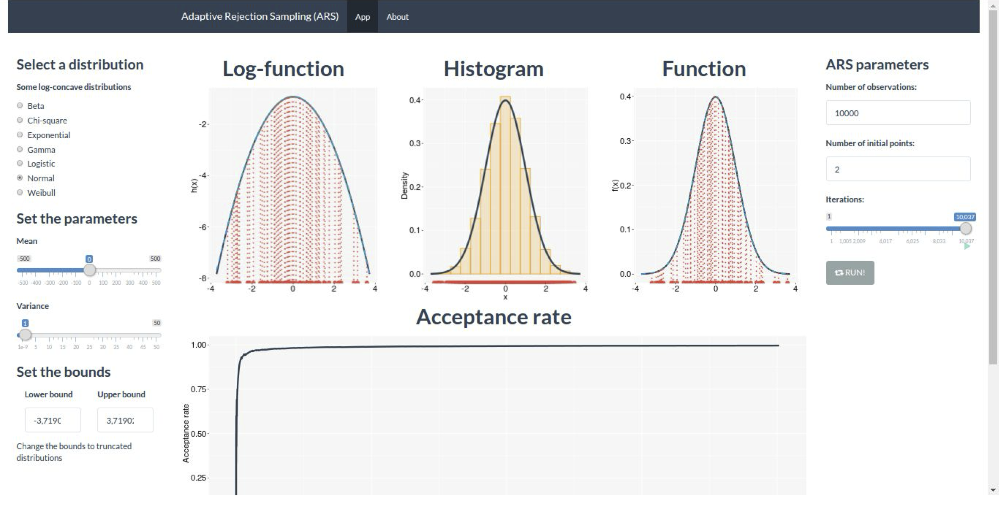

10:00
Bem-vindo ao Shiny World?
Workshop: Introdução ao Shiny
UFMG::DEST
Sobre o Workshop
Materiais do Workshop encontram-se em:
Objetivos do Workshop
Cada um de vocês desenvolva o seu próprio aplicativo
Aprender um com os outros
Construir um entendimento geral do Shiny
From R code to Apps
Fluxo do Workshop
Porquê Shiny?
. . . Sit back and enjoy the tour!
O que nós estatísticos entregamos?
- Qual o produto de um estatístico?
- Análise de dados? Modelos estocásticos? Previsão? Recomendação?
- Como os resulados/produtos são apresentados e disponibilizados?
- Relatórios (PDF, Word)
- Lista de tabelas e gráficos
- Planilhas (Excel)
- Apresentações (Power point)
Produtos tradicionais

Produtos tradicionais
E se?
E se?
E se?
E se?
E se?
E se?
E se?
E se?
Encontre mais exemplos em:
Conceitos básicos
Pacote Shiny
R Shiny
- R Shiny = R + Web
- Shiny é um pacote de código aberto desenvolvido pelo desenvolvedor de software Winston Chang na empresa Posit (RStudio).
- Facilita a criação de aplicações Web, tais como análises estatísticas e visualiazações diretament do R.
- Não é necessário conhecimento em HTML, css, JavaScript.
- Para customizações mais avançadas, o pacote shiny permite a interação com outras linguagens.
Mas o que é um aplicatico Shiny?
Shiny app
- Shiny app é uma página web (UI - User interface) conectada a um computador/server que esteja rodando uma sessão
R(Server). - Os usuários interagem com a interface web (UI) que envia comandos
Re então retornam os resultados para o usuário através da (UI).

Objetos ui e server
shinyAppcombina os objetosuieservere constrói o applicativo.- Experimente rodar o código apresentado acima.
Objetos ui e server
library(shiny)
ui <- fluidPage("Olá, mundo!")
server <- function(input, output){}
shinyApp(ui = ui, server = server)Carrega o pacore shiny com
library(shiny)Define a interface do usuário, a página HTML com a qual os usuários interagem. Neste caso, é uma página que contém as palavras “Olá, mundo!”.
Especifica o comportamento do nosso aplicativo definindo a função
server. Atualmente está vazia, então nosso aplicativo não faz nada, mas voltaremos a revisitar isso em breve.Executa
shinyApp(ui, server)para construir e iniciar uma aplicação Shiny a partir da UI e do servidor.
Objetos ui e server
- Em geral os objetos
uieserversão criados em arquivos separados: ui.R e server.R - A maneira mais comum de criar am aplicativo shiny é criando um diretório da seguinte forma:
- app-name: diretório com o nome do app.
- ui.R: arquivo com as funções de interface
- server.R: arquivos com as funções de operações da interface.
- www: diretório com e imagens que serão compartilhados com o browser.
- app-name: diretório com o nome do app.
Sua vez
Abra o arquivo 01-ola-mundo.R no RStudio e…
- Substitua seu
uipor:
ui <- fluidPage(
selectInput("dataset", label = "Dataset", choices = ls("package:datasets")),
verbatimTextOutput("summary"),
tableOutput("table")
)- Execute o applicativo e veja o resultado
- Faça o mesmo com o objeto
server
server <- function(input, output, session) {
output$summary <- renderPrint({
dataset <- get(input$dataset, "package:datasets")
summary(dataset)
})
output$table <- renderTable({
dataset <- get(input$dataset, "package:datasets")
dataset
})
}- Execute o applicativo novamente e veja o resultado
- Salve o script R com o nome
app.R
Sua vez - Explicado
ui <- fluidPage(
selectInput("dataset", label = "Dataset", choices = ls("package:datasets")),
verbatimTextOutput("summary"),
tableOutput("table")
)fluidPage()é uma função de layout que estabelece uma estrutura visual básica da página.selectInput()é um controle de entrada (input) que permite ao usuário interagir com o aplicativo fornecendo um valor. Neste caso, é uma caixa de seleção com o label “Conjunto de Dados” e permite escolher um dos conjuntos de dados integrados que acompanham o R.verbatimTextOutput()etableOutput()são controles de saída (output) que indicam ao Shiny onde colocar a saída renderizada (entraremos em como fazer isso em um momento). verbatimTextOutput() exibe código e tableOutput() exibe tabelas.
server <- function(input, output, session) {
output$summary <- renderPrint({
dataset <- get(input$dataset, "package:datasets")
summary(dataset)
})
output$table <- renderTable({
dataset <- get(input$dataset, "package:datasets")
dataset
})
}O lado esquerdo do operador de atribuição (<-), output$ID, indica que você está fornecendo a receita para a saída do Shiny com aquele ID.
O lado direito da atribuição usa uma função de renderização específica para envolver algum código que você fornece.
Cada função render{TIPO} é projetada para produzir um tipo específico de saída (por exemplo, texto, tabelas e gráficos), e geralmente é emparelhada com uma função {tipo}Output.
Por exemplo, neste aplicativo, renderPrint() é emparelhado com verbatimTextOutput() para exibir um resumo estatístico com texto de largura fixa (verbatim), e renderTable() é emparelhado com tableOutput() para mostrar os dados de entrada em uma tabela.
Inputs e Outputs
Entendendo os inputs e outputs
ui.R: inputs e outputs
ui.R: inputs e outputs
- Criando um botão de input com uma das funções de inputs().
sliderInput(inputId = "nume", # identificador do butao (input)
label = "Escolha um valor", # texto que irá aparecer na interface
min = 0, # valor mínimo que o botão aceita
max = 100, # valor máximo que o botão aceita
value = 50, # valor padrão inicial
step = 1) # intervalo entre cada valor- Botão em HTML
<div class="form-group shiny-input-container">
<label class="control-label" id="nume-label" for="nume">Escolha um valor</label>
<input class="js-range-slider" id="nume" data-skin="shiny" data-min="0" data-max="100" data-from="50" data-step="1" data-grid="true" data-grid-num="10" data-grid-snap="false" data-prettify-separator="," data-prettify-enabled="true" data-keyboard="true" data-data-type="number"/>
</div>ui.R: inputs e outputs
ui.R: inputs e outputs
ui.R: inputs
Sua vez
Abra o arquivo
suavez-02.RAdicione os seguintes botões:
Botões
- radio button
- check button
- text input
Tip
- Configure o
inputId,label,choices,selected - Veja também
choiceNamesechoiceValues
15:00
ui.R: outputs
- As funções abaixo tem como objetivo informar ao front-end qual o tipo de objeto será renderizado.
Funções output |
Descrição |
|---|---|
dataTableOutput() |
Tabela interativa |
htmlOutput() |
HTML bruto |
imageOutput() |
Imagem (png, jpg, …) |
plotOutput() |
Gráfico R |
tableOutput() |
Tabela (dataframe) |
textOutput() |
Texto |
uiOutput() |
Botão/interface Shiny |
verbatimTextOutput() |
Texto (código) |
ui.R: outputs
- Para apresentar um objeto do tipo output, basta adicioná-lo ao
fluidPage()com uma função do tipo*output().
ui.R: outputs
- Para apresentar um objeto do tipo output, basta adicioná-lo ao
fluidPage()com uma função do tipo*output().

ui.R: outputs
Server side
Server: regra I
- Salvar o objeto a ser apresentado na UI em output$<ID>.
Server: regra II
Criar os objetos a serem apresentados com as funções .
Atenção: essa função render***() deve estar de acordo com a função de ***Output presente no objeto
ui.
Server: funções render
- Usamos as funções render***() para criar o tipo de output que desejamos fazer.
| Funções.render… | Descrição |
|---|---|
| renderDataTable() | Tabela interativa |
| renderImage() | Imagem (png, jpg, …) |
| renderPlot() | plot - gráfico R |
| renderPrint() | Texto |
| renderTable() | Tabela (dataframe) |
| renderText() | Texto (código) |
| renderUI() | Botão Shiny |
Server: regra II
- Incluindo a função
hist()para criar um histograma e então salvar no objeto output$<ID>.
Server: regra III
- Acessar os valores no objeto inputs com input$.
Server: regra III
- Acessar os valores no objeto inputs com input$.
Nossa vez
Sua vez
Abra o arquivo 02-hist-app.R no RStudio e…
- Modifique o app de forma que o título do aplicativo informe o número de valores que estão sendo simulados.
- Customize a cor do histograma, os rótulos dos eixos x e y, tamanho da fonte.
- Permita valores ente \(1\) e \(1000\) e que seja atualizado ao passo de \(25\) unidades.
- Crie mais dois botões para modificar a média e o desvio-padrão da distribuição normal.
- Adicione um botão para selecionar a cor do histograma: preto, cinza, branco e azul.
15:00
Layout da UI
Layout da UI
- Existem diversas funções para estabelecer um layout para o aplicativo.
Panel (Abas)
- Podemos também criar abas nos aplicativos.
Exemplo 01 - Sidebar/Mainpanel layout
Exemplo 02 - Sidebar/Mainpanel layout
- Criar um aplicativo simples com um dos valores simulados da distribuição normal no . Botão para escolher o número de valores a serem simulados no .
Exemplo 02 - ui
Exemplo 02 - server
Sua vez
Abra o arquivo 03-boxplot.R no RStudio e adicione funcionalidades:
- Título customizável
- Alterar a cor do boxplot com um radioButton() no sidebarPanel.
- O usuário tem que ser ápito a alterar a média, desvio e tomanho da amostra
- Adicionar 5 estatísticas da sua preferência.
15:00
Função reactive
Função reactive()
- Função (de inputs) para ser utilizada em várias partes do aplicativo de forma a otimizar e organizar a aplicação.
Função reactive()
library(shiny)
ui <- fluidPage(
sliderInput(inputId = "num",
label = "Tamanho amostral",
value = 25, min = 1, max = 100),
plotOutput("hist"),
verbatimTextOutput("stats")
)
server <- function(input, output) {
data <- reactive({
rnorm(input$num)
})
output$hist <- renderPlot({
hist(data())
})
output$stats <- renderPrint({
summary(data())
})
}
shinyApp(ui = ui, server = server)Exemplo - Reactive
- Criar um aplicativo para clusterizar a base de dados iris usando algoritmo de K-means.
Exemplo - Reactive - ui
Exemplo - Reactive - server
server <- function(input, output) {
selectedData <- reactive({
iris[, c(input$xcol, input$ycol)]
})
clusters <- reactive({
kmeans(selectedData(), input$clusters)
})
output$plot1 <- renderPlot({
par(mar = c(5.1, 4.1, 0, 1))
plot(selectedData(),
col = clusters()$cluster,
pch = 20, cex = 3)
points(clusters()$centers, pch = 4, cex = 4, lwd = 4)
})
}Sua vez
- Criar um aplicativo para gerar das seguintes distribuições de probabilidade:
- Normal
- Exponencial
- Gerar um histograma bonito dos valores.
- Opção para selecionar a distribuição de probabilidade.
- Opção para o número de valores simulados.
15:00
Lista de Exercícios
- Aplicativo para analisar a base de dados .
- Apresentar os dados usando a função do pacote DT.
- Botão para selecionar qual estatística será calculada.
- Botão para selecionar em qual variável será aplicada o cálculo.
- Botão para indicar se a estatísitca é pela variável “Species”. Dica: ?dplyr::group_by
- Apresentar a estatística calculada. Dica: ?verbatimTextOutput
- Modifique o aplicativo
02-hist-app.R- Adicione uma saída com estatística de média e desvio amostral
- Utiliza a função reactive para gerar o histograma e saída resumo do item anterior
15:00